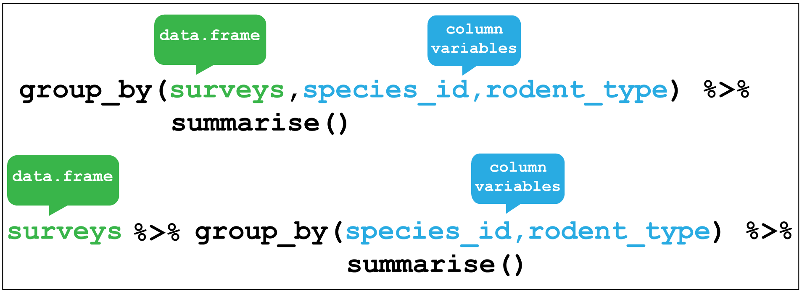
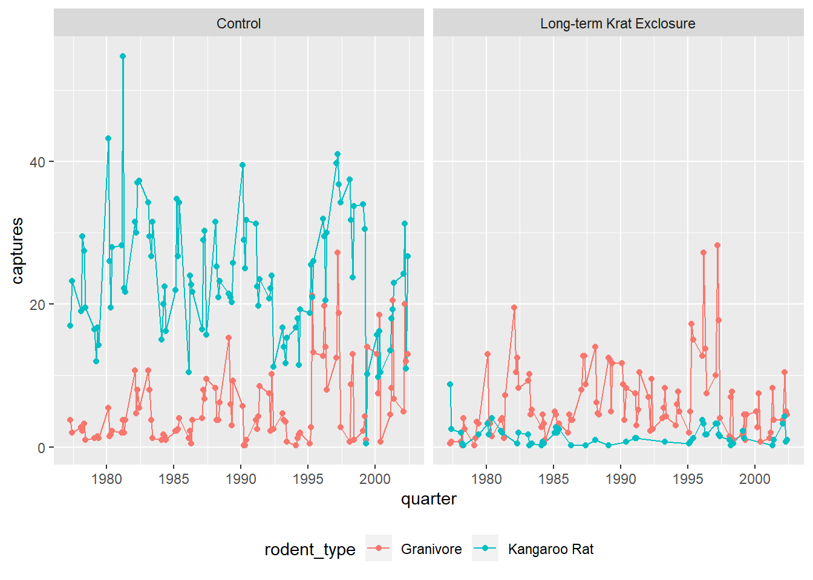
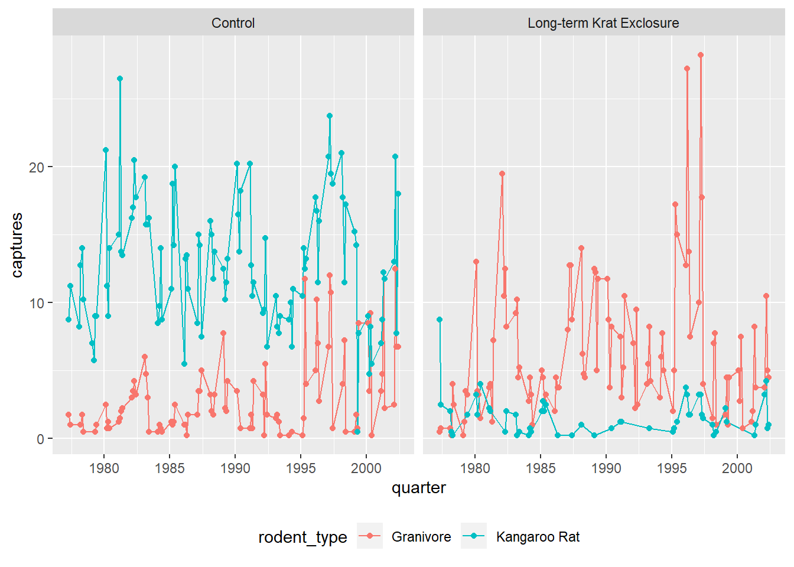

2 Data wrangling I
By the end of this chapter you will:
- have learnt to load and export csv and excel files
- know what tidy data is and how to organise data such that it is tidy
- have used the key verbs of the
dplyrpackage for transforming data to arrange and filter observations, select variables, create new variables, and create summaries. - have learnt how to combine functions with the pipe from the
magrittrpackage to combine tasks
The following sections are based upon the data transformation chapter in R4DS and the Data Carpentry ecology lesson.
2.1 Data organisation in spreadsheets
Karl Broman and Kara Woo wrote as paper all about Data Organization in Spreadsheets.
It’s full of practical advice and context.
2.1.1 Flat formats and Excel files
File formats like .csv and .tsv, comma separated variables and tab separated variables
respectively are plain text files. That is to
say they contain only the data, as text information, and are the simplest and most convenient way to share data as most software can read and
interpret them.
Excel files saves files into its own proprietary format viz xls or xlsx that holds information in addition to the data itself. For reading and
writing excel files in R, the tidyverse readxl package is very useful.
2.2 The Portal Project data
In this chapter we are going to focus on data analysed in the 1994 paper by Heske et. al:
Long-Term Experimental Study of a Chihuahuan Desert Rodent Community: 13 Years of Competition, DOI: 10.2307/1939547.
Specifically they explored the effect on the populations of small seed eating rodents as a result of the exclusion of larger competitor kangaroo rats over a period from 1977 to 1991.
Figure 2.1 shows an image of one of the species of kangaroo rats excluded during the study.

Figure 2.1: Merriam’s kangaroo rat, Dipodomys merriami
Figure 2.2 indicates how the exclusion works, where a for number of fenced plots the kangaroo rats were either able to enter by a hole or kept out.
Figure 2.2: Kangeroo Rat exclusion
The plots are 50 metres by 50 metres, and a survey of the species within each plot has been ongoing once a month for many years.
The dataset is stored as a comma separated value (CSV) file. Each row holds information for a single animal, and the columns represent:
| Column | Description | Type |
|---|---|---|
| record_id | Unique id for the observation | numeric |
| month | month of observation | numeric |
| day | day of observation | numeric |
| year | year of observation | numeric |
| plot_id | ID of a particular plot | numeric |
| species_id | 2-letter code | character |
| sex | sex of animal (“M”, “F”) | character |
| hindfoot_length | length of the hindfoot in mm | numeric |
| weight | weight of the animal in grams | numeric |
| genus | genus of animal | character |
| species | species of animal | character |
| taxa | e.g. Rodent, Reptile, Bird, Rabbit | character |
| plot_type | type of plot | character |
The rodents species surveyed are:
Kangeroo Rats
| species_id | Scientific name | Common name |
|---|---|---|
| DM | Dipodomys merriami | Merriam’s kangaroo rat |
| DO | Dipodomys ordii | Ord’s kangaroo rat |
| DS | Dipodomys spectabilis | Banner-tailed kangaroo rat |
Granivores
| species_id | Scientific name | Common name |
|---|---|---|
| PP | Chaetodipus penicillatus | Desert pocket mouse |
| PF | Perognathus flavus | Silky pocket mouse |
| PE | Peromyscus eremicus | Cactus mouse |
| PM | Peromyscus maniculatus | Deer Mouse |
| RM | Reithrodontomys megalotis | Western harvest mouse |
2.2.1 Downloading and importing the data
First create a R project for this analysis
The dataset is stored online, so we use the utility function
download.file() to download the csv file to our data folder.
(Did you create a data folder in the project directory?)
Here we pass the url = and destfile = arguments to download.file().
As we have the tidyverse packages we can use the readr package it contains, which has many functions for reading files, including read_csv().
The advantage of read_csv() over base R read.csv() is that it defaults to reading strings as
character vectors rather than factors (catergorical variables) which
is usually what we want.
As we read the data into our environment we need to assign a label
to the object we are creating. Here we assign the dataset to an object
called surveys using the <- assignment operator.
2.3 dplyr
2.3.1 Filter rows with filter()
The first verb to consider is the filter() function which enables us to subset observations
based on their value.
Consider the surveys data and sub-setting observations that only occurred from
1985 onwards. It’s fairly natural to say “filter the survey where the year
variable is equal or greater than 1985”. And indeed this is how we use filter()
as a verb.
Figure 2.3 shows how we give the filter function two arguments. The first is the data frame, the second is the variable and condition on which we wish to filter.
Alternatively we can pipe the surveys object
to the function and it implicitly uses surveys
as the first argument.
(Note that we aren’t assigning the output to an object here, so we can see it.)

Figure 2.3: dplyr::filter()
## # A tibble: 25,290 x 13
## record_id month day year plot_id species_id sex hindfoot_length
## <dbl> <dbl> <dbl> <dbl> <dbl> <chr> <chr> <dbl>
## 1 10606 7 24 1985 2 NL F 30
## 2 10617 7 24 1985 2 NL M 32
## 3 10627 7 24 1985 2 NL F 32
## 4 10720 8 20 1985 2 NL F 31
## 5 10923 10 13 1985 2 NL F 31
## 6 10949 10 13 1985 2 NL F 33
## 7 11215 12 8 1985 2 NL F 32
## 8 11329 3 9 1986 2 NL M 34
## 9 11496 5 11 1986 2 NL F 31
## 10 11498 5 11 1986 2 NL F 31
## # ... with 25,280 more rows, and 5 more variables: weight <dbl>,
## # genus <chr>, species <chr>, taxa <chr>, plot_type <chr>2.3.2 Arrange rows with arrange()

Figure 2.4: dplyr::arrange()
Use arrange to find the shortest hindfoot
## # A tibble: 34,786 x 13
## record_id month day year plot_id species_id sex hindfoot_length
## <dbl> <dbl> <dbl> <dbl> <dbl> <chr> <chr> <dbl>
## 1 31400 9 30 2000 19 PB M 2
## 2 10067 3 16 1985 19 RM M 6
## 3 19567 1 8 1992 19 BA M 6
## 4 19015 9 9 1991 19 BA F 7
## 5 21036 8 19 1993 21 PF F 7
## 6 31457 9 31 2000 6 RM M 8
## 7 19191 10 11 1991 13 PF F 8
## 8 5801 4 29 1982 7 RM <NA> 8
## 9 33647 3 14 2002 3 PF M 9
## 10 20562 12 22 1992 5 RM F 9
## # ... with 34,776 more rows, and 5 more variables: weight <dbl>,
## # genus <chr>, species <chr>, taxa <chr>, plot_type <chr>Find the Cactus Mouse, (species_id == "PE") with the longest hindfoot:
Hint Use the desc() function to arrange from biggest to smallest.
## # A tibble: 1,299 x 13
## record_id month day year plot_id species_id sex hindfoot_length
## <dbl> <dbl> <dbl> <dbl> <dbl> <chr> <chr> <dbl>
## 1 1202 9 3 1978 7 PE F 30
## 2 517 1 8 1978 2 PE M 26
## 3 32443 8 25 2001 23 PE F 24
## 4 5080 12 30 1981 15 PE F 23
## 5 5090 12 30 1981 15 PE F 23
## 6 33700 3 14 2002 9 PE F 23
## 7 604 2 18 1978 2 PE M 22
## 8 12459 3 2 1987 2 PE F 22
## 9 13992 1 24 1988 2 PE M 22
## 10 14516 5 15 1988 2 PE F 22
## # ... with 1,289 more rows, and 5 more variables: weight <dbl>,
## # genus <chr>, species <chr>, taxa <chr>, plot_type <chr>2.3.3 Select columns with select()

Figure 2.5: dplyr::select()
## # A tibble: 34,786 x 2
## year plot_type
## <dbl> <chr>
## 1 1977 Control
## 2 1977 Control
## 3 1977 Control
## 4 1977 Control
## 5 1977 Control
## 6 1977 Control
## 7 1977 Control
## 8 1978 Control
## 9 1978 Control
## 10 1978 Control
## # ... with 34,776 more rows2.3.4 Create new variables with mutate()

Figure 2.6: dplyr::mutate()
# Mutate surveys_selected
surveys_mutated <- surveys_selected %>%
#filter(species_id %in% names(lut)) %>%
mutate(rodent_type = case_when(
species_id == "DM" ~ "Kangaroo Rat",
species_id == "DO" ~ "Kangaroo Rat",
species_id == "DS" ~ "Kangaroo Rat",
species_id == "PP" ~ "Granivore",
species_id == "PF" ~ "Granivore",
species_id == "PE" ~ "Granivore",
species_id == "PM" ~ "Granivore",
species_id == "RM" ~ "Granivore",
TRUE ~ "Other"))
# Check the output using a summary pipe, we should have 8 species of 2 types
surveys_mutated %>% group_by(species_id,rodent_type) %>% summarise()## # A tibble: 42 x 2
## # Groups: species_id [42]
## species_id rodent_type
## <chr> <chr>
## 1 AB Other
## 2 AH Other
## 3 AS Other
## 4 BA Other
## 5 CB Other
## 6 CM Other
## 7 CQ Other
## 8 CS Other
## 9 CV Other
## 10 DM Kangaroo Rat
## # ... with 32 more rows2.3.5 Grouped summaries with group_by() and summarise()

Figure 2.7: dplyr::group_by() and dplyr::summarise()
dplyr::group_by() and dplyr::summarise()" width="954" />
##
## Attaching package: 'lubridate'## The following object is masked from 'package:here':
##
## here## The following object is masked from 'package:base':
##
## datesurveys_subset <- surveys_mutated %>%
mutate(date = make_date(day = day, month = month, year = year),
quarter = quarter(date,with_year = TRUE)) %>%
filter(!is.na(rodent_type))by_quarter <- surveys_subset %>%
group_by(rodent_type,plot_type,quarter) %>%
summarise(captures = n()/4)ggplot(by_quarter,
aes(x=quarter,y=captures,colour=rodent_type)) +
geom_line() +
geom_point() +
facet_wrap(~ plot_type)## Warning: Removed 2 rows containing missing values (geom_path).## Warning: Removed 5 rows containing missing values (geom_point).
by_quarter %>%
filter(rodent_type != "Other") %>%
ggplot(aes(x=quarter,y=captures,colour=rodent_type)) +
geom_line() +
geom_point() +
facet_wrap(~ plot_type) +
theme(legend.position = "bottom")## Warning: Removed 1 rows containing missing values (geom_path).## Warning: Removed 3 rows containing missing values (geom_point).